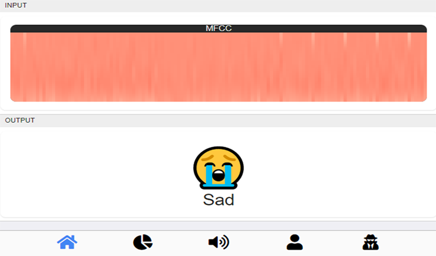
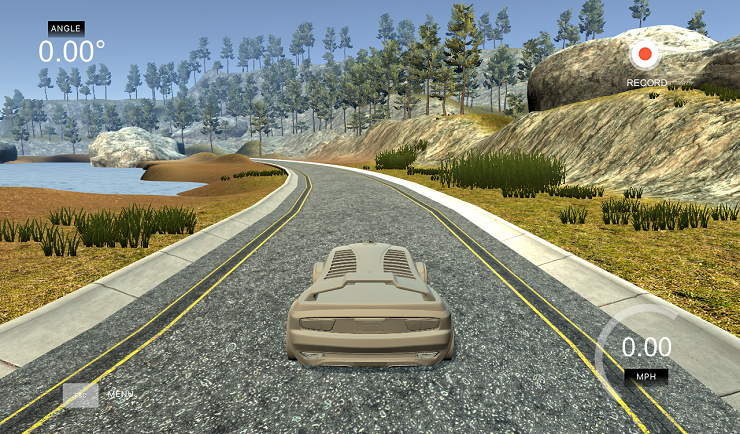
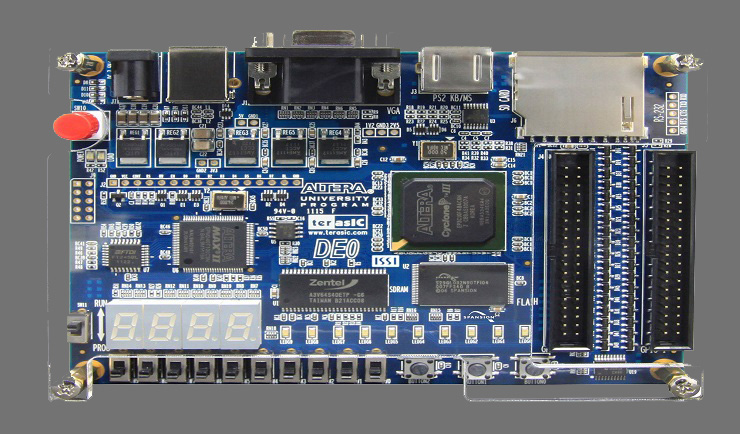

I'm a passionate Java Programmer with interests in Machine Learning.
Recently i graduated from Ostfalia University with a Bachelor degree in Computer Science focussing on Computer Engineering.
In my freetime i like programming games preferably in Java.
Dungeon Crawler
In this project i developed a Dungeon Crawler like game in Java using the LibGDX Framework.
It was fun to apply the theoratical algorithm stuff learned over the semesters from University.
Besides that i learned the basics of game development and build management using Gradle.
Source
Speech Emotion Recognition
My Bachelor thesis was about the development of a PWA for Speech Emotion Recognition.
Two models were built with Deep Learning using Keras, one lightweight for frontend, one heavy better performing for backend prediction.
I used Javascript with Vue for the Frontend and Python with Flask for the Backend.
Source
ESP32 to Xbox One Controller
The objective of this project was to produce good PWM signals for a motor that are controlled over Bluetooth Classic with an Xbox One Controller.
A ESP32 microcontroller with a price of circa $10 significantly lowers production cost, although its limited processing power compared to a Raspberry Pi makes it only suitible in some secenarios.
I used C with the official ESP32 Toolchain and built on top of Bluekitchens Bluetooth Classic HID Host example.
Source
Autonomous Vehicle
This project was about the development of a Deep Neural Network for autonomously driving a vehicle around a virtual roadway.
I followed an online course that showed the basic machine learning algorithms needed for this task.
Python with Keras was used to train the model.
Source
LM75 Temperature Sensor
Here I programmed the I2C protocol in VHDL to communicate with the LM75 sensor.
I used the Altera DE0 development board and 7 segment blocks for showing the temperature in °C.
Source